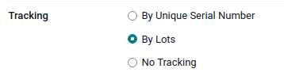

GS1 barcode usage¶
GS1 barcodes provide a standardized format that barcode scanners can interpret. They encode information in a specific structure recognized globally, allowing scanners to understand and process supply chain data consistently.
Odoo Barcode interprets and prints GS1 barcodes, automating product identification and tracking in warehouse operations such as receiving, picking, and shipping.
The following sections contain examples of how Odoo uses GS1 barcodes provided by the business to identify common warehouse items and automate certain warehouse workflows.
Important
Odoo does not create GS1 barcodes. Businesses must purchase a unique Global Trade Item Number (GTIN) from GS1. Then, they can combine their existing GS1 barcodes with product and supply chain information (also provided by GS1) to create barcodes in Odoo.
See also
Configure barcodes for product, quantity, and lots¶
To build a GS1 barcode that contains information about a product, its quantities, and the lot number, the following barcode patterns and Application Identifiers (A.I.) are used:
Name |
Rule Name |
A.I. |
Barcode Pattern |
Field in Odoo |
|---|---|---|---|---|
Product |
Global Trade Item Number (GTIN) |
01 |
(01)(\d{14}) |
Barcode field on product form |
Quantity |
Variable count of items |
30 |
(30)(\d{0,8}) |
Units field on transfer form |
Lot Number |
Batch or lot number |
10 |
(10)([!”%-/0-9:-?A-Z_a-z]{0,20}) |
Lot on Detailed Operations pop-up |
Configuration¶
First, enable product tracking using lots by navigating to , and checking the box for Lots & Serial Numbers under the Traceability heading.
Then, set up the product barcode by navigating to the intended product form in and selecting the product. On the product form, click Edit. Then, in the General Information tab, fill in the Barcode field with the unique 14-digit Global Trade Item Number (GTIN), which is a universally recognized identifying number that is provided by GS1.
Important
On the product form, omit the A.I. 01 for GTIN product barcode pattern, as it is only used to
encode multiple barcodes into a single barcode that contains detailed information about the
package contents.
Example
To record the GS1 barcode for the product, Fuji Apple, enter the 14-digit GTIN
20611628936004 in the Barcode field on the product form.

Tip
To view a list of all products and their corresponding barcodes in the Odoo database, navigate to . Under the Barcode heading, click on the Configure Product Barcodes button under the Barcode Scanner section. Enter the 14-digit GTIN into the Barcode column, then click Save.

After activating tracking by lots and serial numbers from the settings page, specify that this feature is to be applied on each product by navigating to the Inventory tab on the product form. Under Tracking, choose the By Lots radio button.
Scan barcode on receipt¶
To ensure accurate lot interpretation in Odoo on product barcodes scanned during a receipt operation, navigate to the app to manage the receipt picking process.
From the Barcode Scanning dashboard, click the Operations button, then the Receipts button to view the list of vendor receipts to process. Receipts generated from POs are listed, but new receipt operations can also be created directly through the app using the Create button.
On the list of receipts, click on the warehouse operation (WH/IN) and scan product barcodes and
lot numbers with a barcode scanner. The scanned product then appears on the list. Use the
✏️ (pencil) button to open a window and manually enter quantities for specific lot
numbers.
Example
After placing a PO for fifty apples, navigate to the associated receipt in the Barcode app.
Scan the barcode containing the GTIN, quantity, and lot number. For testing with a barcode scanner, below is an example barcode for the fifty Fuji apples in Lot 2.
50 Fuji apples in Lot0002 |
|
|---|---|
2D Matrix |

|
A.I. (product) |
01 |
GS1 Barcode (product) |
20611628936004 |
A.I. (quantity) |
30 |
GS1 Barcode (quantity) |
00000050 |
A.I. (lot) |
10 |
GS1 Barcode (lot #) |
LOT0002 |
Full GS1 barcode |
0120611628936004 3000000050 10LOT0002 |
If the configuration is correct, 50/50
Units processed will be displayed and the Validate button turns green.
Click the Validate button to complete the reception.

Configure barcode for product and non-unit quantity¶
To build a GS1 barcode that contains products measured in a non-unit quantity, like kilograms, for example, the following barcode patterns are used:
Name |
Rule Name |
A.I. |
Barcode Pattern |
Field in Odoo |
|---|---|---|---|---|
Product |
Global Trade Item Number (GTIN) |
01 |
(01)(\d{14}) |
Barcode field on product form |
Quantity in kilograms |
Variable count of items |
310[0-5] |
(310[0-5])(\d{6}) |
Units field on transfer form |
Scan barcode on receipt¶
To confirm that quantities are correctly interpreted in Odoo, place an order in the Purchase app using the appropriate unit of measure (UoM) for the quantity of products to be purchased.
After the order is placed, navigate to the app to receive the vendor shipment.
Example
On the receipt in the Barcode app, receive an order for 52.1 kg of peaches by scanning the
barcode containing the GTIN and quantity of peaches in kilograms.
52.1 kg of Peaches |
|
|---|---|
2D Matrix |

|
A.I. (product) |
01 |
GS1 Barcode (product) |
00614141000012 |
A.I. (kg, 1 decimal point) |
3101 |
GS1 Barcode (quantity) |
000521 |
Full GS1 barcode |
0100614141000012 3101000521 |
If the configuration is correct, 52.1 / 52.1
kg will be displayed and the Validate button turns green. Finally, press
Validate to complete the validation.

Verify product moves¶
For additional verification, the quantities of received products are also recorded on the Product Moves report, accessible by navigating to .
The items on the Product Moves report are grouped by product by default. To confirm the
received quantities, click on a product line to open its collapsible drop-down menu, which displays
a list of stock move lines for the product. The latest stock move matches the warehouse reception
reference number (e.g. WH/IN/00013) and quantity processed in the barcode scan, demonstrating that
the records processed in the Barcode app were properly stored in Inventory.